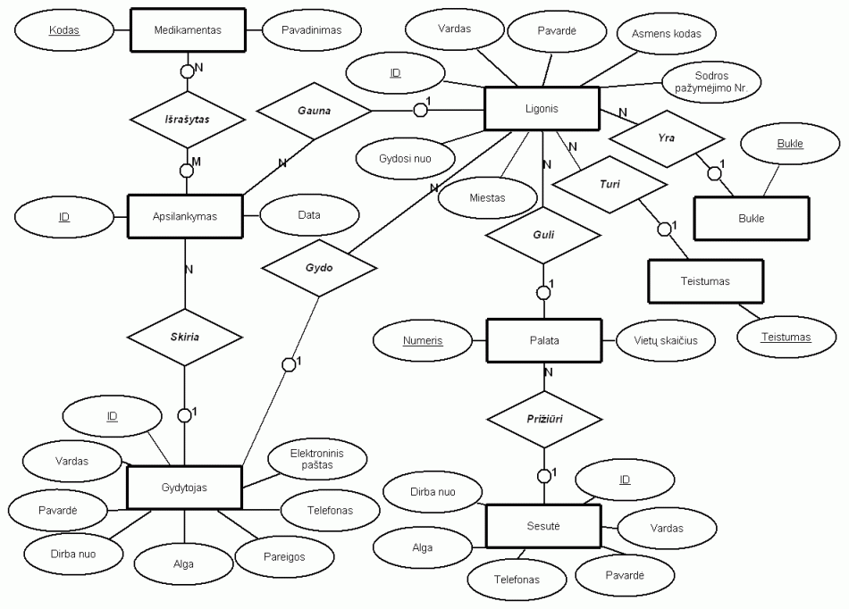
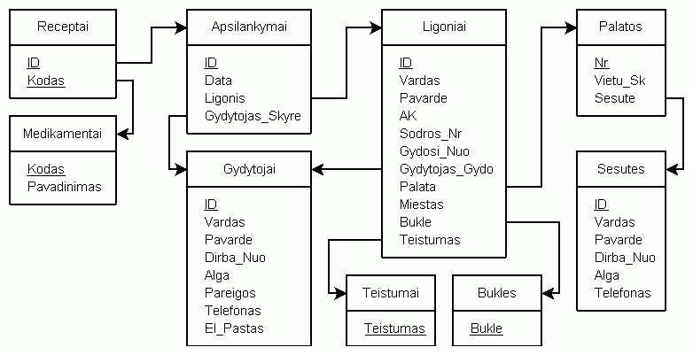

Psichiatrinės ligoninės duomenų bazė
II DBVS praktinė užduotis
Andrius Šemiolkinas
II kursas [2005–2006], Informatika,
VU
MIF
Semantinis DB modelis
Ligoninėje dirba gydytojai ir sesutės, kurie yra identifikuojami pagal jiems priskiriamą unikalų ID. Sesutės prižiūri palatas, kuriose guli ligoniai. Palatos yra identifikuojamos pagal numerius. Palatose yra nevienodas vietų skaičius. Ligonis turi taip pat savo unikalų ID. Ligonį įtraukus į duomenų bazę, jam priskiriamas jį gydantis gydytojas. Reikalui esant, ligoniui yra išrašomi receptai medikamentams gauti. Medikamentus skiria gydytojas (nebūtinai tas pats, kuris gydo pastarąjį ligonį) apsilankymo metu. Skiriamų medikamentų skaičius ligoniams yra neribotas, tačiau receptai gali būti išrašomi tik ligoninėje esantiems medikamentams (jei medikamento nėra, jį tenka atgabenti į ligoninę – įtraukti į ligoninės DB).
ER diagrama

Spauskite
ant diagramos, norėdami ją išdidinti arba
atsisiųskite diagramą
DIA formatu
Powered by DIA
Reliacinė duomenų bazės schema

Atsisiųskite diagramą
DIA formatu
Powered by DIA
DB kūrimo etapai
Lentelių projektavimas – duomenų tipų nustatymas reikšmėms, pirminių ir išorinių raktų nustatymas, išorinių raktų apibrėžimas, reikšmių reikalavimų deklaravimas, reikšmių būtinumo lentelėje nustatymas (NOT NULL), duomenų pertekliaus eliminavimas, 4NF reikalavimų įvykdymas (duomenų pertekliaus eliminavimas ir kt.), lentelių įtraukimas į DB.
Virtualiųjų lentelių projektavimas – logiškų išvestinių atributų parinkimas naujoms lentelėms, užklausos sakinių suformulavimas išvestiniams atributams, virtualių lentelių įtraukimas į DB.
Dalykinių taisyklių (triggers) ir automatinių tapatumo požymių užtikrinimas – reikalingų automatinių tapatumo požymių nustatymas ir jų suformulavimas, svarbiausių dalykinių taisyklių nustatymas ir jų realizavimas bei įtraukimas į duomenų bazę.
Duomenų bazės užpildymas testiniais duomenimis.
Indeksų ir unikaliųjų indeksų nustatymas ir jų įtraukimas į duomenų bazę.
DB sukūrimas ir panaikinimas
DB2 –td# –f createtables.sql
DB2 –td# –f createviews.sql
DB2 –td# –f createtriggers.sql
DB2 –td# –f insertdata.sql
DB2 –td# –f createindexes.sql
DB2 COMMIT
DB2 –td# –f dropindexes.sql
DB2 –td# –f deletedata.sql
DB2 –td# –f droptriggers.sql
DB2 –td# –f dropviews.sql
DB2 –td# –f droptables.sql
DB2 COMMIT
DB egzistuojančios lentelės po duomenų įvedimo
Lentelės:
Sesutės (ID, Vardas,
Pavarde, Dirba_Nuo,
Alga, Telefonas)
Palatos (Nr, Vietu_Sk, Sesute)
Gydytojai
(ID, Vardas,
Pavarde, Dirba_Nuo,
Alga,
Pareigos, Telefonas, El_Pastas)
Bukles (Bukle)
Teistumai (Teistumas)
Ligoniai (ID, Vardas,
Pavarde,
AK, Sodros_Nr, Gydosi_Nuo, Gydytojas_Gydo, Palata,
Miestas, Bukle, Teistumas)
Medikamentai
(Kodas,
Pavadinimas)
Apsilankymai (ID, Data, Ligonis,
Gydytojas_Skyre)
Receptai (ID, Kodas)
Virtualiosios lentelės:
LaisvosVietos – vertikali
virtuali lentelė, papildyta išvestiniu atributu „Laisvos Vietos“
SkiriamiVaistai – jungtinė virtuali lentelė
LigonioInfo – jungtinė virtuali lentelė, papildyta
2 išvestiniais atributais „Skirti Vaistai“ ir
„Is Viso Skirta“
Indeksai
Gydytojas (Vardas, Pavarde) –
sudėtinis indeksas lentelėje
Gydytojai
Ligonio_AK (AK) – unikalus indeksas lentelėje
Ligoniai
Ligonio_Sodra (SoDros_Nr) – unikalus indeksas lentelėje
Ligoniai
Užklausos sakiniai
showall.sql
– visos DB egzistuojančios lentelės
queries.sql
– paprastos užklausos detalesnėms (statistinėms) lentelėms
gauti
DB testavimas
Deklaratyvių reikalavimų duomenims ir automatinių tapatumo požymių priskyrimo
testavimas
Dalykinių
taisyklių (triggers) testavimas
Specifinės situacijos imitacija ligoninėje
30–oje palatoje gydomas pacientas pasveiko. Atvyksta naujas ligonis, kuriam reikalingi nauji dar iki šiol šioje ligoninėje nenaudoti medikamentai. Nauji medikamentai įtraukiami į ligoninės duomenų bazę. Ligoninėje pradeda dirbti naujas gydytojas. Naujasis gydytojas imasi gydyti naująjį ligonį ir tas pats gydytojas skiria (galėtų skirti ir kitas) jam naujuosius medikamentus. Ligonis guldomas į specialiai jam paruoštą vienvietę 33-iąją palatą. Jei ten yra kitų pacientų, jie perkeliami į kitą palatą. Prižiūrinti šią palatą sesutė išeina iš darbo, todėl priimama dirbti nauja sesutė, kuri pakeis ją.
Užklausos išspendžiančios minėtąją situaciją duomenų bazėje vykdant INSERT, DELETE ir UPDATE sakinius.
Programa darbui su DB
Išeities kodas (Microsoft Visual C++ 6.0)
Kompiliavimas Windows ir Linux terpėse
© 2006 aNdRoJdAz aka [xTc]
{kind=link}